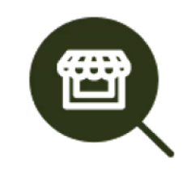
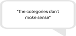
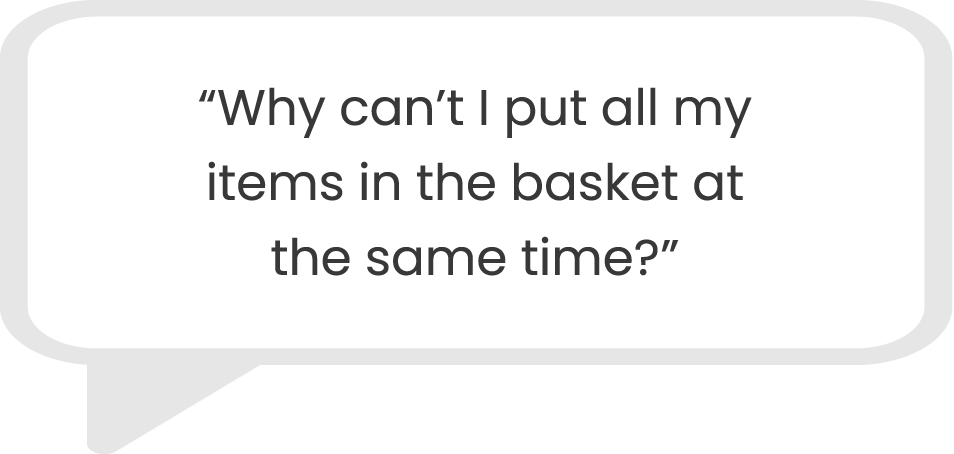
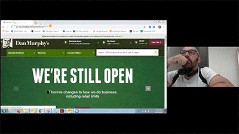
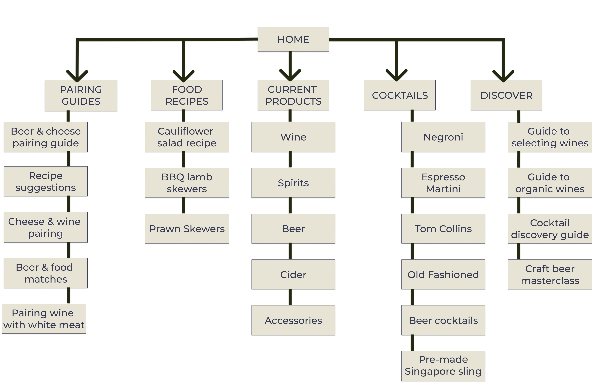
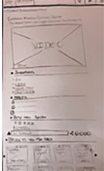
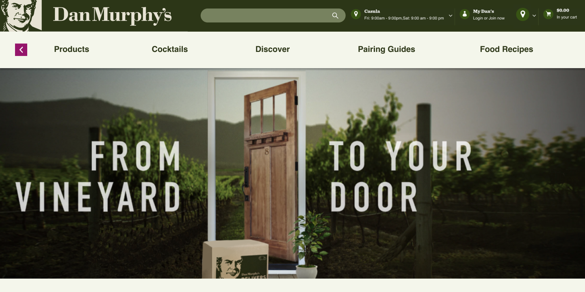
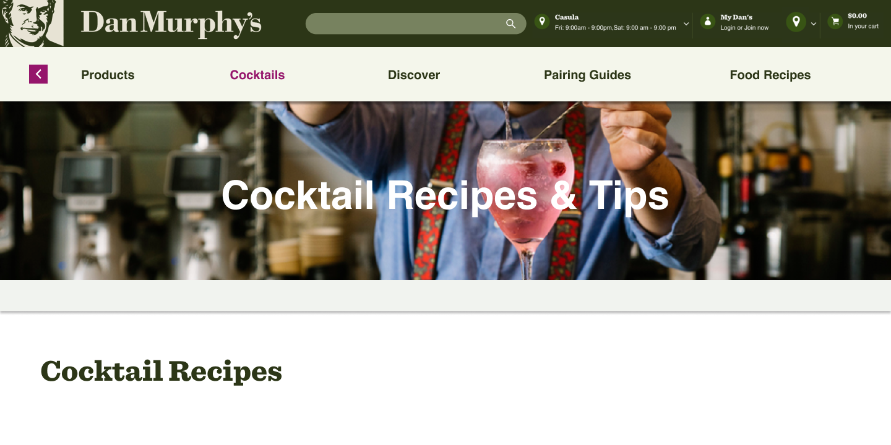
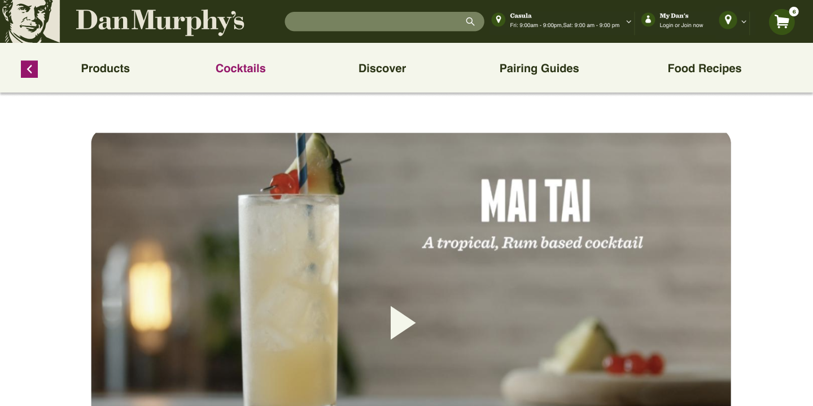
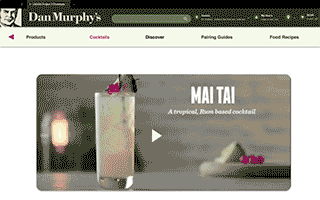

"Shopping in-store is quicker and easier than using the website "
"It's hard to find what I want online, so I still shop in-store"
"It's just a better experience than doing it online"
"Ok, it might be more risky, but I'm not too worried, the website is too confusing"
We mapped out our findings
From this we found that people are still choosing to shop in-store because they dislike the current website.
People dislike the website and find it confusing
People prefer to buy in person and choose their items
People are not concerned of potential risks

People like to browse in-store
People think delivery is terrible
People like to read the labels
Our first assumptions were wrong.
Covid-19 wasn't the main issue, it was in fact the Dan Murphy's website with a massive 80% of users struggling
to use it.
Task at hand
We gave users the simple task of finding the ingredients of their favourite
cocktail and add them to the cart.
We also asked them to gather the ingredients for making a Mai Tai , if they didn't know what made up a Mai
Tai, to find out using the website.



Tree jacking showed us how even simple tasks couldn't be completed due to confusing site
layout.
Due to the enforced COVID-19 restrictions, this whole project was done remotely. We found that tree jacking was
the most effective method for testing as it allowed us to watch them as they moved through the site.
Our new focus
Our new aim was to simplify the discovery process for the users by making it as simple as it is when shopping
in-store.
Open card sort with 14 users
Through open card sorting we were able to understand what users expected to see when using the
website.
This also made it clearer to us as to what labels our users expected to see on the home page.
From these findings, we got to work on the site's IA to clean up the navigation.

Meet Our Users
Giving a face to our data
From our research we identified two main users. Cate our primary user and Josh our secondary user.
CATE
The Cocktail Lover
Goals
- Likes to experiment with different cocktails.
- Wants more options when buying ingredients online.
- Would like to be able to buy smaller quantities.
Frustrations
- Ingredients are expensive.
- Everything only comes in full-size bottles.
- Dissatisfied with current enforced restrictions for deliveries.
JOSH
The Regular Drinker
Goals
- Likes to try different brands of beer.
- Enjoys searching and browsing online for new products.
- Prefers to shop in person so he can see the products.
Frustrations
- "Discover" area is very confusing.
- Concerned about shopping in person.
- Worried he's drinking more than usual.
Cate's Journey
A familiar one
With the current Dan Murphy's website being so confusing to use, it was no surprise that users were still
shopping in-store.
One other main reason that was that shoppers enjoyed the the experience of reading the labels and touching the
products as they shopped.
Our Solution
Why desktop first?
The current site, though responsive, is poor. There is an app but people don't use it. From our
research
we
discovered that none of the users used the app. Despite mobile first principles, we decided to focus on
what
users wanted to use- desktop.
Design
Sketches
We started the design process with a few sketches before moving on to mid-fi.

1st iteration findings
Discover Page
- All those that we tested with asked " what exactly does favourites mean?"
- Why are so many of the same items on different pages?
- Why so many search bars?
(Click on thumbnails to view full images)
Something was wrong, the sketches were too similar to
the existing website.
2nd iteration findings
Home Page
- Removed items from discovery to make more sense to users.
- Simplified the design.
- Headings changed to match users'expectations.

Discover page
- "Discover" now matches users' expectations.
- Re-arranged the hierarchy.
- Simplified the design.
- Guides now found here.

Cocktail recipes page
- Alcohol bases now clearly sub-categorised.
- Pre-made cocktails section.
- Special occasion cocktails section added.
- Cocktails now show the alcohol base type.

Cocktail page
- Add to cart overlay appears.
- "Select All" button added for quicker selection added to bottom of page.
- Overlay asks for confirmation of selected ingredients.

The Final Prototype

Next Steps
From here we would need:
- Further rounds of testing.
- Adding in more items to check navigation & flow.
- Complete more detailed tasks with users.
- Further iterations to UI.
- Deeper look into increased alcohol drinking behaviours.
- Review Material Design & HIGS (for effective development).
- Contrast checks to ensure WCAG are met.
Key Takeaways
At the beginning of this project I stated that I wanted to be involved in both research and
design.
I wasn't very experienced using Figma (which was our design tool for this project), however I feel like I had
seriously improved by the end of the project.
The hi-fi prototype was my own work and I am very proud of what I achieved and how I had managed to up-skill in
4 days.
Also, the benefit of having early sketches that relate to the research to iterate from would have made the
design process much easier- getting the design right and the right design certainly came to mind on this
project. This was a great lesson!
Thank you!


{kind=link}
{kind=link}
{kind=link}
{kind=link}